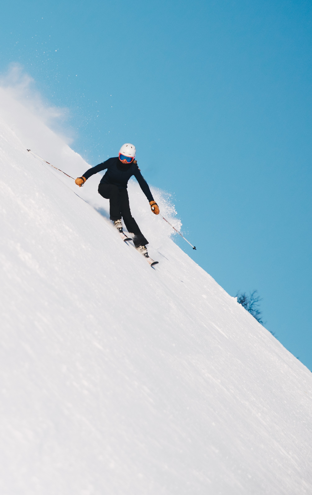

Olympic
Winter Olympic 2026
The Winter Olympic Games (French: Jeux olympiques d'hiver) is a major international multi-sport event held once every four years for sports practiced on snow and ice. The first Winter Olympic Games, the 1924 Winter Olympics, were held in Chamonix, France. The modern Olympic Games were inspired by the ancient Olympic Games, which were held in Olympia, Greece, from 776 BC to 394 AD. The Baron Pierre de Coubertin of France founded the International Olympic Committee (IOC) 1,500 years later in 1894, leading to the first modern Summer Olympic Games in Athens, Greece in 1896. The IOC is the governing body of the Olympic Movement, with the Olympic Charter defining its structure and autho

| Countries |
Gold |
Silver |
Bronze |
| Norway |
148 |
133 |
124S |
| US |
113 |
122 |
95 |
| Germany |
112 |
104 |
70 |